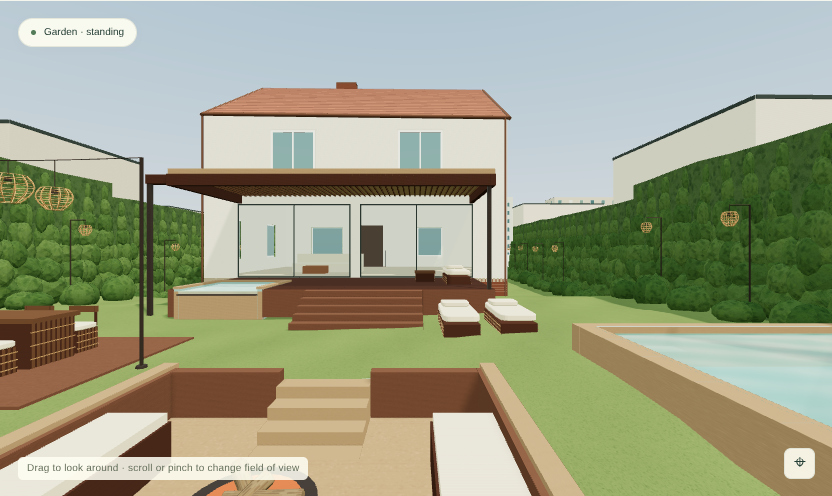
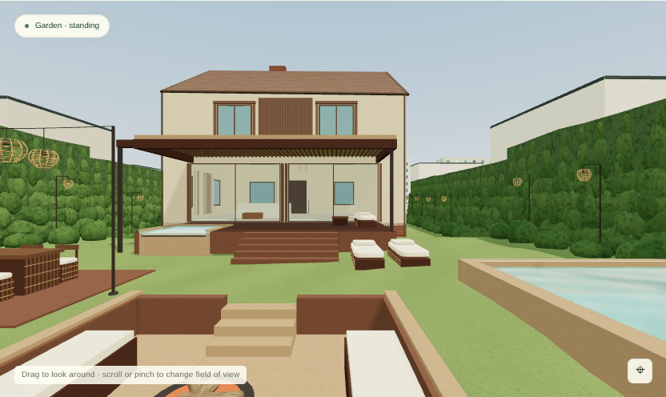
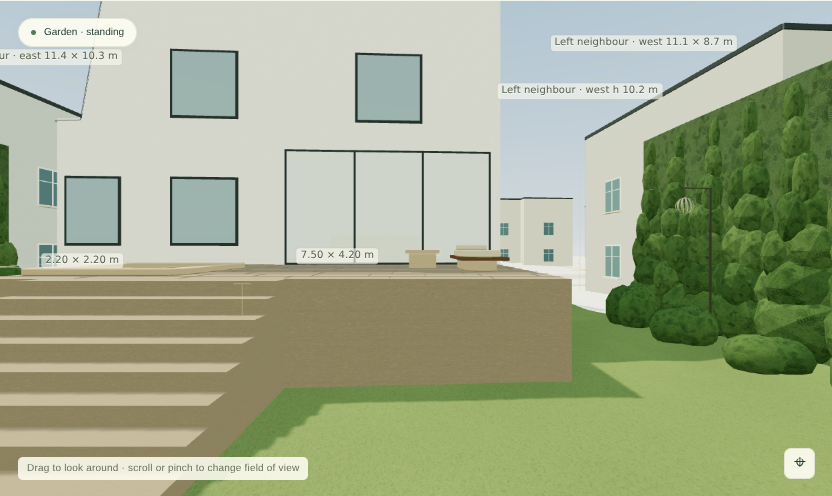
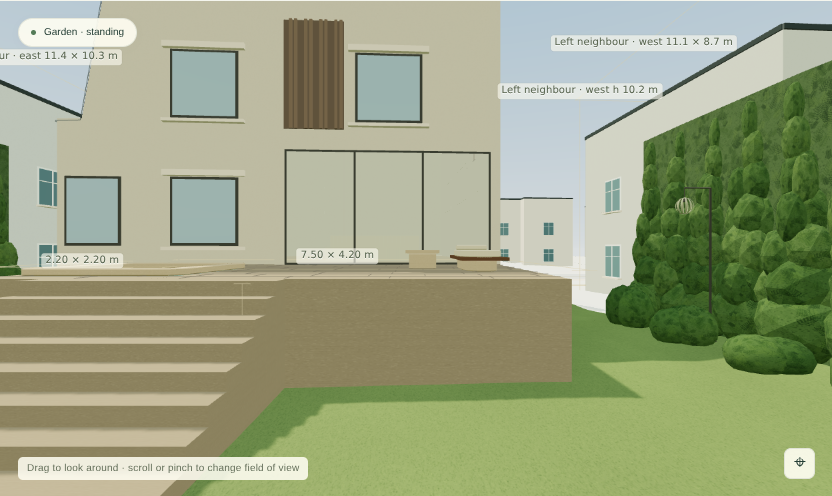
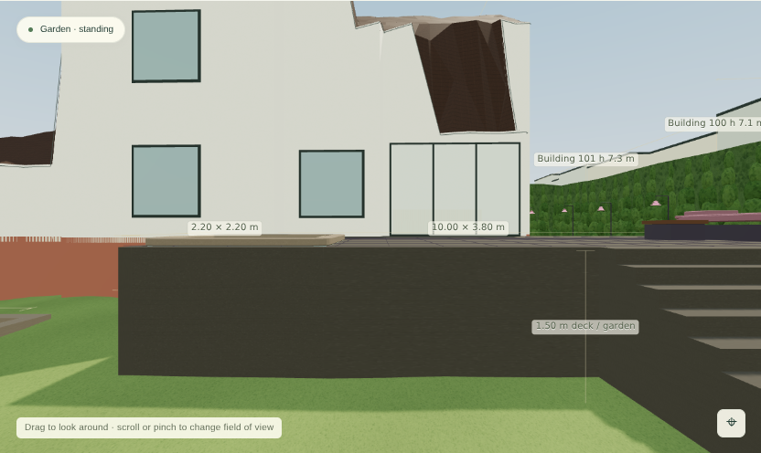
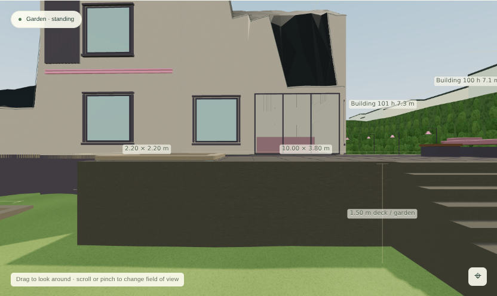
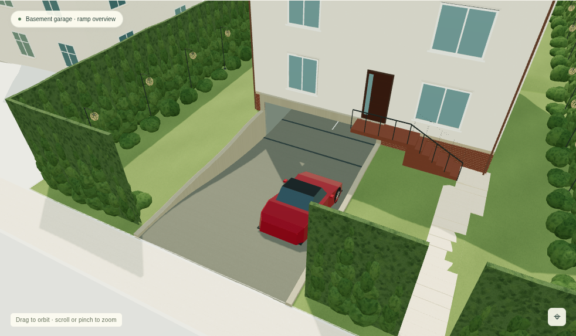
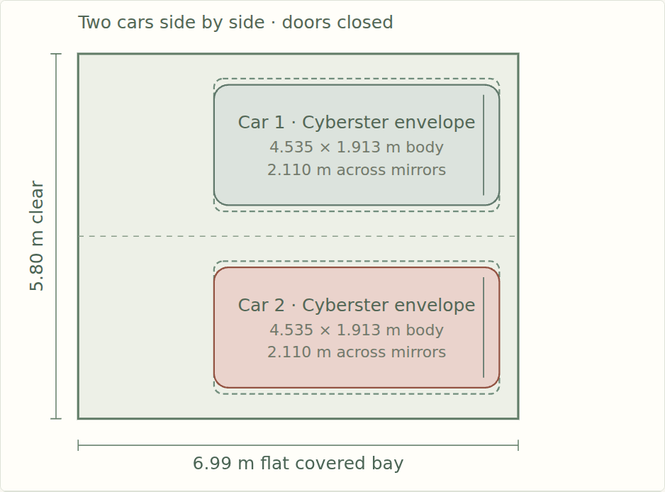
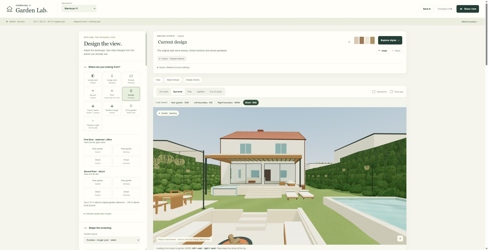
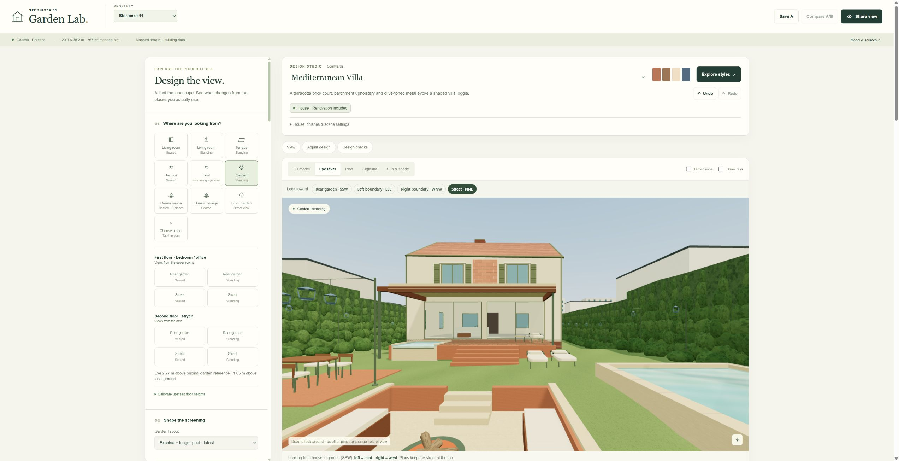

Garden Lab · release 1.25.0 · 18 November 2026
A house that follows the style.
A garage that keeps two cars.
All 20 proposed styles now include restrained façade work on the existing building. Current design keeps the original house exterior. Older single-car Sternicza designs automatically regain the required two-car layout.
Luxury Hidden Bali Resort
Sternicza 11


Same viewpoint, garden style and daylight. Only the house-renovation switch changes between these two frames.
Organic Japandi
Korzeniowskiego 40


Same viewpoint, garden style and daylight. Only the house-renovation switch changes between these two frames.
Luxury Contemporary Party Club
Nadmorska 17


Same viewpoint, garden style and daylight. Only the house-renovation switch changes between these two frames.
Sternicza 11 · required two-car capacity
Two separate lanes, one wider entrance.
The restored layout uses a 5.8 m clear entrance and two 2.9 m lanes. The moving car occupies one lane while the second remains parked inside the house. Old links, saved designs and saved comparison A upgrade automatically. Explicitly narrow two-car comparisons keep their width and show the failed fit.


These are geometric planning checks. Door movement, street turning, drainage details and the actual structure remain unverified.
Live browser review
Original exterior and Mediterranean proposal.




These full-editor views use different garden styles. The house-only comparisons above hold the garden constant.
Verification record
Actual WebGL renders were checked for every style, original-image restoration, resource disposal, scope persistence and all three houses. Existing night lighting, terrace, balcony, swimming-view and garage regressions also passed.
55 browser checks
- Built application loads with a real WebGL canvas
- Optional basement garage starts off and creates a visibly different WebGL excavation and open entrance when enabled
- Full front-yard-only, raised-basement and deeper-floor options show distinct conservative clearance results
- Car position and reverse preview change actual WebGL and the equal-scale profile without changing full-drive minima
- Garage dimensions and preview direction survive scenario A/B, normal reload and Share reload
- The garage profile and clearance results remain readable at 390px without horizontal overflow
- Garage state stays isolated to Sternicza and the browser check restores the original garage-off design
- All eight upper-floor presets enter eye mode with correct direction, posture and readout
- Editable first and attic floor heights update the actual observer readout
- Night preview and both independent lighting switches work
- All three dimmers respond, including an actual rendered change from 0% to 100% active windows
- Daylight restores the sun clock and turns simulated artificial lights off
- Upper-floor preset, eye mode and night time survive a normal page reload
- The visible Share view action creates a reloadable upper-floor night view
- Mobile layout at 390px retains all eight upper viewpoints without horizontal page overflow
- Spa screening improves the visible PCK3 result and a reduced service gap shows a layout warning
- Switching established pergola foliage off reduces the actual terrace screening result
- Combined Plan displays the finite pergola, two planted sides and both spa screen panels
- Combined screening survives Share and reload in the actual WebGL orbit scene
- The property selector exposes all three independently named properties
- Switching to Korzeniowskiego preserves its own floor height and upstairs view
- Sternicza privacy comparisons and quotes stay hidden on the other two properties
- Nadmorska WebGL load uses its own plot, floor and final LiDAR roof evidence
- Nadmorska first-floor street control points +90 degrees and shares that exact direction
- The busier 70% evening visibly lights more neighbouring windows than 35% in the same WebGL street view
- Nadmorska window activity, independent light switches and visible WebGL water glow work after dark
- Garden pendants and thuja lanterns each brighten the actual WebGL scene independently of landscape accents
- Garden master switches both hanging-light channels off while retaining their settings and neighbouring windows
- Pendant switches and dimmers survive Share and reload without changing the property or garden layout
- Isolated hedge lanterns light foliage and ground by formerly unlit fixtures, respond to the dimmer and restore all channels
- At 25% and 85%, isolated hedge lanterns leave three exterior ground patches beyond the plot effectively unchanged
- Nadmorska whole-plot plan shows 709.29 square metres, pool sizes and both side access openings
- Nadmorska plot, property selector and eight upstairs controls fit a 390px mobile page
- The 390px mobile night scene renders all active hedge lighting and visibly responds to its switch in WebGL
- No unhandled JavaScript or browser console errors
- Fresh defaults use a 4 m terrace, infinity jacuzzi and 3 m high / 4 m deep canopy; basement remains optional
- Two-car entrance, separated vehicle envelopes and the over-ramp landing appear in real WebGL and exported clearance checks
- A narrow two-car setting is explicitly rejected rather than shown as a valid fit
- Balcony replaces the canopy in the rendered scene and exposes a first-floor viewpoint and proposed guarded deck
- Swimming view uses the actual pool water level and its editable eye offset visibly moves the camera
- Balcony, pool viewpoint and two-car dimensions survive sharing and reload
- A v22 garage link opens with two parking bays and 5.8 m width, retaining its original terrace and cover settings
- The double-garage plan, result and cover controls fit a 390 px viewport without page overflow
- All 21 choices are accessible through select, search, family filter and Escape focus return
- Automatic and Eco bound resolution and shadow texture size
- All 20 styles automatically add facade geometry. Current restores the original WebGL image and resource counts return near baseline
- Keyboard selection includes house renovation. Undo and Redo of the house-only opt-out preserve the selected camera and golden-hour time
- A house opt-out survives the share link, a saved-design reload and JSON export
- A 20,000 PLN incremental quote clears independently on renovation and style changes, and Undo restores its original scope
- Save A and return to B preserve the intermediate real design as the Undo target
- Same solar time, orbit mode and viewport size do not refit the shadow camera
- Reduced motion, diagram/offscreen pauses and synthetic visibilitychange after headless foreground freeze
- 390 px and 320 px editor and scrollable catalogue fit all 21 choices
- Each mapped property renders a visible house-only renovation from its own garden viewpoint
- An existing v24 styled link opens with its house renovation included
Release summary · Style and rendering report · Garage and terrace report · Lighting and wider regression report